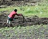

fertilizer

Definition: A fertilizer (American English) or fertiliser (British English; see spelling differences) is any material of natural or synthetic origin that is applied to soil or to plant tissues to supply plant nutrients. Fertilizers may be distinct from liming materials or other non-nutrient soil amendments. Many sources of fertilizer exist, both natural and industrially produced. For most modern agricultural practices, fertilization focuses on three main macro nutrients: nitrogen (N), phosphorus (P), and potassium (K) with occasional addition of supplements like rock flour for micronutrients. Farmers apply these fertilizers in a variety of ways: through dry or pelletized or liquid application processes, using large agricultural equipment or hand-tool methods.
Source: Wikipedia
Wikipedia Page
Wikidata Page